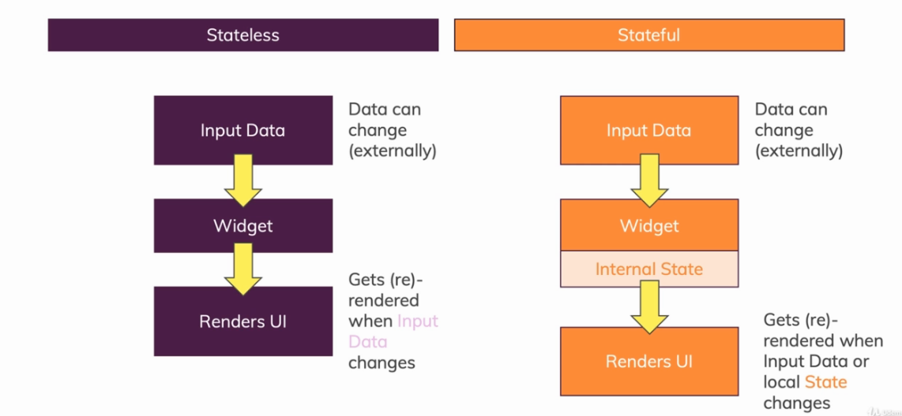

Flutter
Table of Contents
- 1. Popular packages
- 2. Overview
- 3. Project management via CLI
- 4. Project directory hierarchy
- 5. Dart
- 6. Styling
- 7. Widgets
- 7.1. Lifecycle
- 7.2. Keys
- 7.3. Popular Types
- 7.4. Stateless vs Stateful
- 7.5. Widget Communication
- 7.6. Spawning Widgets from a List
- 7.7. User Inputs
- 7.8. Using the ListView and GridView builders
- 7.9. Images
- 7.10. Picking Time and Date
- 7.11. Forcing a round corner with ClipRRect
- 7.12. Drawer
- 7.13. Pull-to-refresh
- 7.14. Scrollable content
- 8. Responsive design
- 9. Adaptive design
- 10. Routing and Navigator
- 11. State Management with Providers
- 12. Delete heading at the end
1 Popular packages
- intl: internationalization and formatting for dates/currencies etc.
2 Overview
2.1 Flutter Architecture
- UI as Code: Building a widget tree
- Embrace Platform Differences
- One Codebase
- Does not use platform specific primitives, it uses its own renderer. Gives a lot of control and more flexibility.
2.2 Premade styling
- Flutter comes with Google's "Material Design" widgets
- We can also use Apple's "Cupertino" widgets
3 Project management via CLI
Verify if flutter has everything it needs
flutter doctor -v
Create a project
flutter create my_project_name
Run a project
cd my_project_name flutter run
4 Project directory hierarchy
- models: Any entities
- providers: State management providers
- screens: Individual screens (pages)
- widgets: Reusable widgets
- services: App wide services, like 'Settings', 'Resources' or 'RestClient'
5 Dart
5.1 Imports
// Importing core libraries import 'dart:math'; // Importing libraries from external packages import 'package:test/test.dart'; // Importing files import 'path/to/my_other_file.dart';
5.2 Data Types
- Nothing:
void - Null:
null - Text:
- String:
String - StringBuffer:
StringBuffer
- String:
- Numbers:
- Integers:
int - Floats:
double - Number, generic, dynamic:
num
- Integers:
- Boolean:
bool - Collections:
- Lists:
List - Sets:
Set - Maps:
Map
- Lists:
- Time:
- Date and time:
DateTime - Time span:
Duration
- Date and time:
- URI:
Uri
5.3 Null safety
Add a question mark to the type declared to denote that a type may be
nullString? hello; int? x = null;
5.4 Inferring the type
- Use
varlike in TypeScript to infer the type
void main() { int myAge = 30; // is stored as int double myBankAcc = 41.33 // is stored as double }
5.5 Classes
- Private and Public: add an underscore to a class property or to a class to make it private.
- Basic classes
class Spacecraft { String name; DateTime launchDate; // Constructor, with syntactic sugar for assignment to members. Spacecraft(this.name, this.launchDate) { } // Named arguments in the constructor, one is with a default value Spacecraft({ String name = 'Hello', DateTime launchDate }) { this.name = name; this.launchDate = launchDate; } // Named constructor that forwards to the default one. Spacecraft.unlaunched(String name) : this(name, null); int get launchYear => launchDate?.year; // read-only non-final property // Method. void describe() { print('Spacecraft: $name'); if (launchDate != null) { int years = DateTime.now().difference(launchDate).inDays ~/ 365; print('Launched: $launchYear ($years years ago)'); } else { print('Unlaunched'); } } } // USAGE var voyager = Spacecraft('Voyager I', DateTime(1977, 9, 5)); voyager.describe(); var voyager3 = Spacecraft.unlaunched('Voyager III'); voyager3.describe();
5.6 Inheritance
class Orbiter extends Spacecraft { double altitude; Orbiter(String name, DateTime launchDate, this.altitude) : super(name, launchDate); }
5.7 Mixins
- Please note that in Dart one can mix multiple mixins, but extend only one class
class Piloted { int astronauts = 1; void describeCrew() { print('Number of astronauts: $astronauts'); } } // USAGE class PilotedCraft extends Spacecraft with Piloted { // ··· }
5.8 Singletons
class Singleton { final foo = 'foo'; Singleton._internal(); static final Singleton _instance = Singleton._internal(); factory Singleton() { return _instance; } } // USAGE var x = Singleton().foo;
5.9 Interfaces and abstract classes
- Dart has no
interfacekeyword. Instead, all classes implicitly define an interface. Therefore, you can implement any class. - You can create an abstract class to be extended (or implemented) by a concrete class. Abstract classes can contain abstract methods (with empty bodies).
abstract class Describable { void describe(); void describeWithEmphasis() { print('========='); describe(); print('========='); } }
- Any class extending
Describablehas thedescribeWithEmphasis()method, which calls the extender’s implementation ofdescribe().
5.10 Final vs Const
- Final is a runtime constant value, it can be set during runtime
- Const cannot be changed at runtime it is set during compile time
6 Styling
6.1 Themes
- Insert the theme in the
MaterialAppwidget like so:
class MyApp { build(BuildContext context) { return MaterialApp( title: 'xxx', theme: ThemeDate( primarySwatch: Colors.purple, // setup a main color range (swatch) accentColor: Colors.amber, // for accented widgets fontFamily: 'Quicksand', // global font textTheme: ThemeData.light().textTheme.copyWith(title: TextStyle(fontFamily: 'OpenSans', fontWeight: FontWeight.bold, fontSize: 18)) appBarTheme: AppBarTheme( textTheme: ThemeData.light().textTheme.copyWith(title: TextStyle(fontFamily: 'OpenSans')) ), ), home: HomeWidget(); ); } } // reuse the 'textTheme' style in a Text Text('Hiya', style: Theme.of(context).textTheme.title)
- Use in code like so:
class MyWidget extends StatelessWidget { build(BuildContext context) { return Text('Hello', style: TextStyle( color: Theme.of(context).primaryColor, ), ); } }
6.2 Border
- Usually on a
Container's decoration:
Widget build(BuildContext context) { return Container( width: double.infinity, margin: EdgeInsets.all(30), decoration: BoxDecoration( color: Colors.deepPurple, borderRadius: BorderRadius.circular(5), border: Border.all( color: Colors.purple, width: 2, ), ), child: Text( _questionText, style: TextStyle(fontSize: 28, color: Colors.white), textAlign: TextAlign.center, ) ); }
6.3 Fonts
- Adding the OpenSans font as an example
- Create an asset folder in the root
- Dump the ttf files into a fonts subfolder
- In the pub.spec.yaml add the fonts like so:
fonts: - family: OpenSans fonts: - asset: assets/fonts/OpenSans-Regular.ttf - asset: assets/fonts/OpenSans-Bold.ttf weight: 700
- Whenever choosing a font refer to it as
'OpenSans'
6.4 Font types and sizes in TextTheme
| NAME | SIZE | WEIGHT | SPACING |
|---|---|---|---|
| headline1 | 96.0 |
light | -1.5 |
| headline2 | 60.0 |
light | -0.5 |
| headline3 | 48.0 |
regular | 0.0 |
| headline4 | 34.0 |
regular | 0.25 |
| headline5 | 24.0 |
regular | 0.0 |
| headline6 | 20.0 |
medium | 0.15 |
| subtitle1 | 16.0 |
regular | 0.15 |
| subtitle2 | 14.0 |
medium | 0.1 |
| bodyText1 | 16.0 |
medium | 0.5 |
| bodyText2 | 14.0 |
regular | 0.25 |
| button | 14.0 |
medium | 1.25 |
| caption | 12.0 |
regular | 0.4 |
| overline | 10.0 |
regular | 1.5 |
7 Widgets
7.1 Lifecycle
- Stateless
Constructorbuild()
- Stateful
ConstructorinitState(): usually need to callsuper.initState()build()setState()didUpdateWidget()build()dispose(): usually need to callsuper.dispose()
- Binding to native Lifecycles
- Extend a
StatefulWidgetwith aWidgetsBindingObservermixin
class _MyHomePageState extends State<MyHomePage> with WidgetsBindingObserver { // Adding the observer @override void initState() { WidgetsBinding.instance.addObserver(this); super.initState(); } @override void didChangeAppLifecycleState(AppLifecycleState state) { // reacting to the state change } // Removing the observer @override void dispose() { WidgetsBinding.instance.removeObserver(this); super.dispose(); } }
- Extend a
7.2 Keys
- Use the
Keyclass for unique identification of Widgets - There is a
UniqueKeyfor generating random keys andValueKey(val)for lists or others where we have IDs
7.3 Popular Types
- App and Page Setup
MaterialApp,CupertinoAppScaffold,CupertinoPageScaffold
- Layout
Container: like adivin HTML. Usually you'd set the width, height, padding, margin and borders (decoration) through this widget.SizedBox: like theContainerbut requires dimensions. Used as a content separator as well.Row: usemainAxisAlignmentand/orcrossAxisAlignmentto position child widgetsColumn: usemainAxisAlignmentand/orcrossAxisAlignmentto position child widgetsGrid: very powerful, like always
- Row / Column Children
ExpandedFlexible
- Content Containers
StackCardSingleChildScrollViewshowModalBottomSheet: create a pop up modal from the bottom of the screen
- Repeat Elements
ListView: Generally use the ListView.builder() to display only the items that are currently seen on screen. It's just more efficient.GridViewListTile
- Content Types
TextImageIcon
- User Input
TextFieldRaisedButton,FlatButton,IconButtonGestureDetectorInkWell
7.4 Stateless vs Stateful

- Stateless
class Question extends StatelessWidget { final String _questionText; Question(this._questionText); @override Widget build(BuildContext context) { return Container( width: double.infinity, margin: EdgeInsets.all(30), child: Text( _questionText, style: TextStyle(fontSize: 28), textAlign: TextAlign.center, ) ); } }
- Stateful and
Scaffoldexample
class MyApp extends StatefulWidget { @override State<StatefulWidget> createState() { return _MyAppState(); } } class _MyAppState extends State<MyApp> { String text = 'Hi!'; void _tapMe() { setState(() { // update state text = "Tapped!"; }); } @override Widget build(BuildContext context) { return MaterialApp( home: Scaffold( appBar: AppBar( title: Text('My First App'), ), drawer: AppDrawer(), body: Column( children: <Widget> [ Text(text), RaisedButton( child: Text('Tap me'), onPressed: _tapMe, ) ] ), ), ); } }
7.5 Widget Communication
- Pass a function through to the child's Widget via the constructor
- Call the function in the child Widget to trigger functionality in the parent
class MyWidget extends StatelessWidget { final Function _onPressedHandler; MyWidget(this._onPressedHandler); Widget build(BuildContext context) { return RaisedButton( child: Text('Tap me'), onPressed: () { _onPressedHandler('some data here'); }, // or if not passing data then: // onPressed: _onPressedHandler ) } }
- A
StatefulWidget'sStatesub-class can use the reservedwidgetproperty to access theStatefulWidgetclass' properties
class MyWidget extends StatefulWidget { final Function tx; MyWidget(this.tx); @override _MyWidget createState() => _MyWidget(); } class _MyWidget extends State<MyWidget> { void _callAFuncFromWidgetProperty() { // NOTE: 'widget' is a reserved property of the State class that provides access to the parent StatefulWidget class // here you can use the tx property from the MyWidget class (even though we are in _MyWidget class) directly like so: widget.tx(); // NOTE: furthermore the 'context' of the class is also available as a property } }
7.6 Spawning Widgets from a List
class MyWidget { // question is a list as follows: var questions = [ { qText: 'What is your fav color?', qAns: ['red', 'blue']}, { qText: 'What is your fav animal?', qAns: ['dog', 'cat', 'eagle']}, ]; var qIdx = 0; void cb(x) { setState() { // do something with x } } // in the build() method Column( children: [ Text('Hello World'), // using the spread operator, casting and toList() to accomplish concatenating the list with the previous widget ...(questions.[qIdx]['qAns'] as List<String>).map((answer) { return Answer(cb, answer); // Answer is a custom widget that takes a callback and a string as the params }).toList() ] ) // or without array concatenation Column( children: questions.[qIdx]['qAns'].map((answer) { return Answer(cb, answer); }).toList() ) }
7.7 User Inputs
- Create a property inside of a widget that instantiates a
TextEditingController. Access it later.
class MyWidget { final userInputController = TextEditingController(); Widget build(BuildContext ctx) { return TextField( decoration: InputDecoration(labelText: 'User Input'), controller: userInputController, ) } String grabInput() { return userInputController.text; } }
7.8 Using the ListView and GridView builders
- Usually use the
ListTileclass for each element of the list
class MyWidget { final var itemArr = [1, 2, 3, 4]; Widget build() { return ListView.builder( itemBuilder: (ctx, index) { return Widget(itemArr[index]); // Here create widgets from the array }, itemCount: itemArr.length ); } }
GridViewis very similar to aListView
GridView.builder( padding: const EdgeInsets.all(10.0), itemCount: products.length, itemBuilder: (ctx, i) => MyWidget( products[i].id ) gridDelegate: SliverGridDelegateWithFixedCrossAxicCount( crossAxisCount: 2, childAspectRatio: 3 / 2, crossAxisSpacing: 10, mainAxisSpacing: 10, ) ) // like in the case of a ListView you can use a tile to display the grid elements Widget build(BuildContext ctx) { return GridTile( child: Image.network(imageUrl), fit: BoxFit.cover, footer: GridTileBar( backgroundColor: Colors.black54, leading: IconButton( icon: Icon(Icons.favorite), onPressed: () { // ... } ), trailing: IconButton( icon: Icon(Icons.shopping_cart), onPressed: () { // ... } ) title: Text(title), textAlign: TextAlign.center, ) ) }
7.9 Images
- Add images to the pub.spec.yaml file
assets:
- assets/images/image1.jpeg
- assets/images/image2.jpeg
- In your code then use the
Imagewidget - Usually you'd wrap it in a
Containeror aSizedBoxto set width and height boundaries
Image.asset('assets/images/image1.jpeg', fit: BoxFit.cover) // cover respects boundaries and scales the img
7.10 Picking Time and Date
// built-in method showDatePicker( context: context, // context can normally be grabbed without being passed (StatefulWidget) initialDate: DateTime.now(), firstDate: DateTime(2019), lastDate: DateTime.now() );
7.11 Forcing a round corner with ClipRRect
- Wrap a widget with ClipRRect to create round corners as an example:
ClipRRect( borderRadius: BorderRadius.circular(10), child: GridTile() );
7.12 Drawer
- Create a
AppDraweror whatever class
class AppDrawer extends StatelessWidget { @override Widget build(BuildContext ctx) { return Drawer( child: Column( children: <Widget>[ AppBar( title: Text('Hello'), automaticallyImplyLeading: false, ), Divider(), ListTile( leading: Icon(Icons.payment), title: Text('Order'), onTap: () { Navigator.of(ctx).pushReplacementNamed(OrderScreen.routeName || '/orders'); // either or but prefer a static property on a class } ) ] ) ) } }
- Place it in the
Scaffoldclass like so:
Scaffold( drawer: AppDrawer() )
7.13 Pull-to-refresh
- Add the
RefreshIndicatorwidget as the topmost/wrapper
RefreshIndicator( onRefresh: () { _doRefresh(), }, child: Column(), ); // and the callback method looks like follows Future<void> _doRefresh() async { // Do some refreshing logic, usually: // do a http call // update state }
7.14 Scrollable content
- If a list is needed then use a
ListViewor aListViewBuilder, however, when user working with forms the individualListTilecan go out of view and therefore be deconstructed - If deconstruction of widgets is a concern, especially in Forms then use a
Columncombined with aSingleChildScrollView
8 Responsive design
8.1 Using the MediaQuery
- Usually store the
MediaQueryobject in a variable to remove clutter and provide reusability
Widget build(BuildContext context) { final mQ = MediaQuery.of(context); }
- Grabbing the general size object
final size = MediaQuery.of(context).size;
- Getting the height or width with the
MediaQuery
Container( height: MediaQuery.of(context).size.height * 0.6 // take 60% of full screen height );
- Access height/width of a Widget
final button = RaisedButton(); final height = button.preferredSize.height;
- Height of the status bar
MediaQuery.of(context).padding.top; // is literally the padding that is added by the status bar
- Using the
TextScaleFactor, kinda likerem~/~emin CSS
final curScaleFactor = MediaQuery.of(context).textScaleFactor; Text('Always the same size!', style: TextStyle(fontSize: 20)); // always 20px in size Text('This changes!', style: TextStyle(fontSize: 20 * curScaleFactor)); // adjusted to phone's settings
8.2 Utilizing constraints
- Use the
LayoutBuilderto access constraints
LayoutBuilder( builder: (ctx, constraints) { return Column( childred: <Widget> [ Container( height: constraints.maxHeight * 0.4, // 40% height of the parent ) ] ); } );
8.3 Locking orientation
void main() { WidgetsFlutterBinding.ensureInitialized(); SystemChrome.setPreferredOrentations([ // lock to only portrait mode DeviceOrientation.portraitUp, DeviceOrientation.portraitDown, ]); runApp(MyApp()); }
8.4 Reacting to orientation
MediaQuery.of(context).orientation == Orientation.landscape; MediaQuery.of(context).orientation == Orientation.portrait;
8.5 Respecting the Softkeyboard Insets
- Use the
MediaQueryviewInsets property to know how much overlapping content there is over the app
Container( padding: EdgeInsets.only( top: 10, left: 10, right: 10, bottom: MediaQuery.of(context).viewInsets.bottom + 10, ) )
- Furthermore there might be a need to wrap the content in a
SingleChildScrollViewso that it can be scrolled into the view
9 Adaptive design
- Most of widgets have an
adaptiveconstructor - E.g. the
Switch
Switch.adaptive()
- Checking the platform
final isIOs = Platform.isIOS;
SafeAreawidget is a wrapper that is used on devices with notches to push content down of off the notch
10 Routing and Navigator
10.1 Basic Navigation
- Close the topmost widget or go back the stack:
Navigator.of(ctx).pop(); - Go to a page:
Navigator.of(ctx).push(MaterialPageRoute( builder: (_) { return ComeNewScreen(); } ))
10.2 Named Routes
- A good practice is to add a static string to the named routes' class files to remove the possibility of typos.
- Setup routes in the
MaterialAppclass:
MaterialApp( home: Home(), routes: { '/': (ctx) => Home(), // is an automatic home route '/home': (ctx) => Home(), '/details': (ctx) => DetailsScreen(), }, )
- Call the named route:
Navigator.of(ctx).pushNamed( 'details', arguments: { 'id': id } )
- Receive the named arguments in
DetailsScreen():
class DetailsScreen extends StatelessWidget { Widget build(BuildContext ctx) { final routeArgs = ModalRoute.of(ctx).settings.arguments; final id = routeArgs['id'] } }
11 State Management with Providers
11.1 Using the Provider, ChangeNotifier, ChangeNotifierProvider and Consumer classes
- Create a model
class Product { final id; final title; Product(this.id, this.title); }
- Create a provider class for the model
class Products with ChangeNotifier { List<Product> _items = []; List<Product> get items { return [..._items]; } void addProduct(Product p) { _items.add(p); notifyListeners(); } }
- Register a provider (in this case at the root level)
// single provider ChangeNotifierProvider( builder: (ctx) => Products(), // for Provider 3.0 create: (ctx) => Products(), // for Provider 4.0 child: MaterialApp( //.... ); ) // multiple providers void main() { runApp( MultiProvider( providers: [ ChangeNotifierProvider(create: (ctx) => CartModel()), ChangeNotifierProvider(create: (ctx) => Products()), Provider(create: (ctx) => SomeOtherClass()), ], child: MyApp(), ), ); }
- Listening through the
ConsumerorProvider.of
// through the Provider (rebuilds the whole tree on change) final productsData = Provider.of<Products>(ctx); final products = productsData.items; // or through the Consumer (preferred due to fine grain control) return Consumer<Products>( builder: (context, products, child) { return Text("Product count: ${products.length}"); }, ); // if you want parts that shouldn't rebuild then put them in the child return Consumer<Products>( builder: (context, products, child) { return Column( children: [ Text("Product count: ${products.length}"), child, // refers to the Text('Foo') widget ] ) }, child: Text('Foo') );
- If there is a need to call the state directly and without the need of establishing a listener, like for wiping the data that is not part of the currently displayed UI, then use the Provider:
// make sure to set 'listen' to false Provider.of<CartModel>(context, listen: false).removeAll();
11.2 Using a ChangeNotifierProxyProvider to manage services dependencies
return MultiProvider( providers: [ ChangeNotifierProvider.value( value: Auth(), ), ChangeNotifierProxyProvider<Auth, Products>( builder: (ctx, auth, previousProducts) => Products( auth.token, previousProducts == null ? [] : previousProducts.items, ) ) ], child: MaterialApp() )
11.3 Alternative way of building widgets from Futures with the FutureBuilder
- Also shows an example of
CircularProgressIndicatorwhile loading
FutureBuilder( future: Provider.of<Products>(context, listen: false).fetchAndSet(), builder: (ctx, dataSnapshot) { if (dataSnapshot.connectionState == ConnectionState.waiting) { return Center(child: CircularProgressIndicator()); } else { if (dataSnapshot.error != null) { // show error return Center(child: Text('An error occurred.')) } else { return Consumer<Products>( builder: (ctx, orderData) => ListView.builder( itemCount: products.length, itemBuilder: (ctx, i) => ProductItem(products[i]), ), ); } } } )